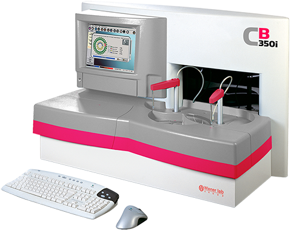

Wiener lab cb 350i
Analizador automatizado de química clínica
“Rápido y robusto, con muy bajo costo de mantenimiento
y prácticamente sin consumibles”

DESCRIPCIÓN: Instrumento compacto de mesa con un software amigable bajo ambiente Windows.
Velocidad: Un total de 534 test/hora.
Diseñado para ser utilizado 24 horas continuas, con función de autodiagnóstico dentro del software. Almacena hasta 500 test.
Conjuntamente con química clínica e inmunoquímica (turbidimetría), es posible agregar las determinaciones de iones (Na, Cl y K; CO2 sobre pedido) mediante electrodos ion selectivos (módulo ISE).
Cubetas autolavables realizan la incubación de las determinaciones, con un bajo consumo de agua bidestilada (< 2 litros/hora).
CARACTERÍSTICAS:
Reactivos:
80 posiciones disponibles para mono o birreactivos.
Identificación por códigos de barra (lector incorporado).
Posibilidad de utilizar cuatro diferentes tamaños de frascos.
Refrigeración regulada por sistema Peltier.
Muestras:
Posibilidad de utilizar tubos primarios o copas.
Carga continua.
52 posiciones para muestras de rutina o STAT, 26 para calibradores y controles.
Sensor de detección de nivel de líquido.
Identificación por códigos de barra (lector incorporado).
Control de calidad:
Juden, Westgard, cálculo x-y.
Estadística diaria o acumulativa.
3 niveles diferentes de control conocido y 3 de control desconocido.
Registro: 2495E2011 SSA
DATOS COMPLEMENTARIOS: Para información adicional comunicarse a:
WIENER LAB.
REPRESENTACIONES LABIN MÉXICO, S. A. de C.V.
Teléfonos: (55) 5524-0771, 5200-2500
Lada sin costo: 01 800-581-4616
e-mail: contacto@wiener-mex.com
www.wiener-lab.com.ar